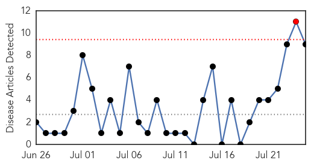
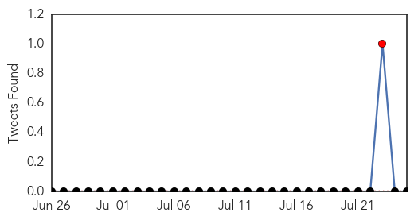
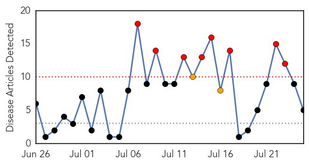

Hepatitis
30-Day Web Trend
1 alerts, 0 warnings

30-Day Twitter Trend
1 alerts, 0 warnings

Article Locations

Article Confidences

Top Articles:
- 0.761
- World Hepatitis Day: Prevent hepatitis. Act now
- 0.737
- Which Vaccination Exemptions Are Allowed by Georgia?
- 0.729
- Malaria vaccine gets regulatory nod « Nigerian Pilot Newspaper
- 0.715
- Finally! First malaria vaccine gets the nod after a 28-year journey
- 0.666
- Health Unit Offers Free Hepatitis Testing This Week
- 0.595
- Malaria vaccine gets regulatory nod
- 0.533
- Malaria vaccine gets regulatory nod
- 0.527
- Call for awareness on Hepatitis B
- 0.519
- Hepatitis spread causes concern in lead up to health week
Top Tweets:
-
No tweets found for Jul 25, 2015
West Nile Virus
30-Day Web Trend
8 alerts, 2 warnings

30-Day Twitter Trend
0 alerts, 0 warnings

Article Locations

Article Confidences

Top Articles:
- 0.977
- FLORIDA confirms 9 human cases of LEPROSY so far this year ~ New study suggests CHRONIC WASTING DISEASE may be transmissible to HUMANS ~ WYOMING confirms three cases of TULAREMIA ~ Officials confirm f
- 0.962
- West Nile in Nashville mosquito pool but not in Knox
- 0.905
- Colorado Horse Diagnosed With West Nile Virus
- 0.846
- Human Case of West Nile Virus Confirmed in Walton County
- 0.547
- Bay County Health Dept. Warns Residents to Protect Themselves Against Mosquitoes
Top Tweets:
-
No tweets found for Jul 25, 2015